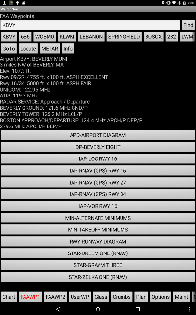
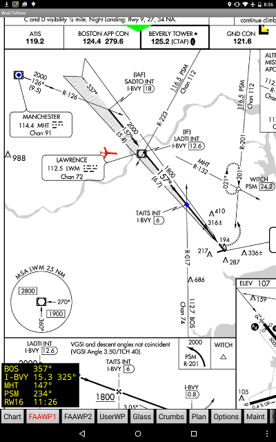
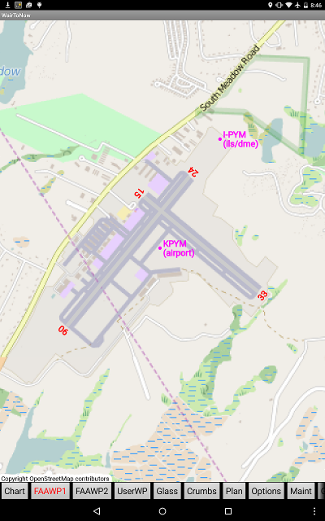

|

- Enter the identifier of the desired waypoint in the text box at the top and
click the Find button.
- You may also enter search words such as a city name.
- Entering multiple words requires that the waypoint
description contains all the words given in the search box.
- The search is case-insensitive.
- Only letters and numbers are searched, all other characters are
treated as spaces separating words.
- The first word given must be found whole, the other words may be
partials.
- You may also click one of the history buttons listed below the text box
to get a recent waypoint. Long-click the button to delete it from the list.
- The GoTo button will set the waypoint as the current destination
and a line will be drawn from the airplane to the destination location
on the Chart page.
- The Locate button will center the moving map of the
Chart page on the waypoint.
- If it is an airport, the METAR button will link to the FAA's
METAR page. Internet access is required for this to work.
- If it is an airport, the Info button will display AFD-like
information for the airport. The
plates for the airport's
state must be downloaded for this button to work, or the button
will be grayed out.
- If it is an airport, the Dwnld button will download the plates and
information for the airport if it is not already downloaded, and will be
grayed out if it is already downloaded.
- Description information for the waypoint will be displayed next.
- Secondary pages are available for airports, provided the
plates for the airport's
state have been downloaded. Buttons will be shown to display plates
for this airport, including:
Clicking on the button will display the item as a secondary page.
- Georeferencing will be provided for the APD, IAP
and RWY diagrams, depicting the current airplane
position provided it is within the area of the diagram.
|


- Get to primary page by either clicking Android's Back
button or the corresponding FAAWP1/2 button.
|